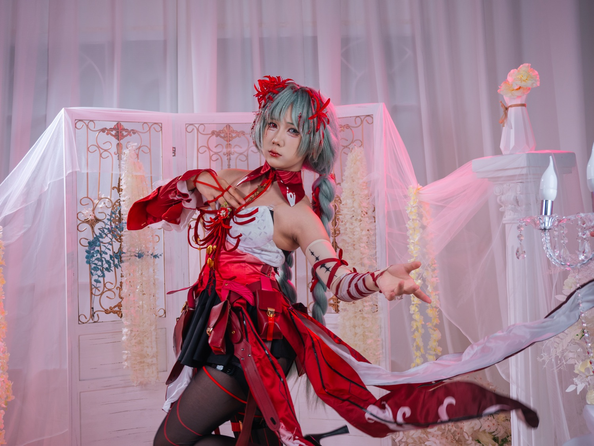

按下快门之前，
我在等什么

这张照片是这组作品里我最满意的一张。
我想让模特把动作做好，同时把裙摆甩起来。真正开始拍以后才发现，这两件事放在一个人身上很难配合。
模特自己甩裙摆时，很难同时把动作做好。动作到位了，裙摆可能已经落下去了。
拍摄卡在这里以后，我突然想到，可以让现场的另一位摄影师帮忙甩裙摆。
模特只需要把动作做好，另一位摄影师负责裙摆，我继续看画面。重新分工以后，很快就拍到了这张照片。
我最满意的地方，就是裙摆飞起来以后带出的动势。模特的动作没有被打断，裙摆出现的位置也刚好合适。
按下快门之前，我等的就是这一刻。